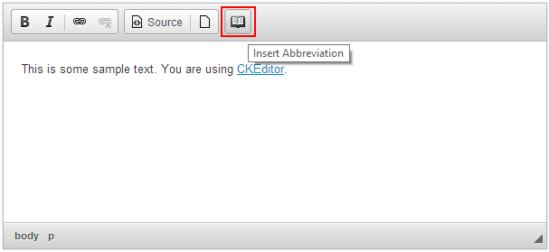
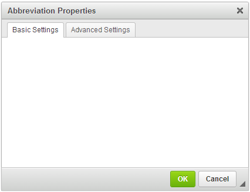
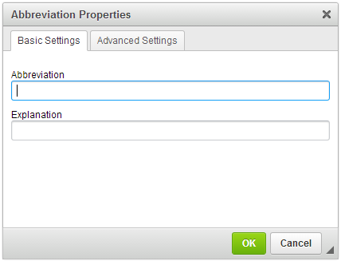
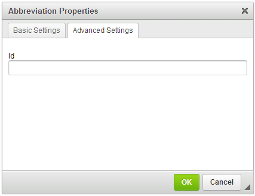
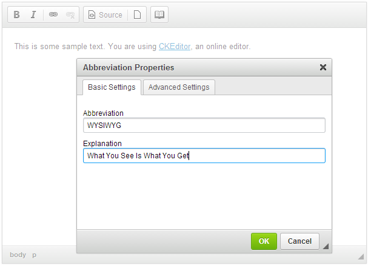

Creating a Simple CKEditor Plugin (Part 1)
Creating a Simple CKEditor Plugin (Part 1)
The aim of this tutorial is to demonstrate how to create a basic CKEditor plugin.
We are going to develop an abbreviation plugin that lets the users insert abbreviations
into their documents. The abbreviations will be using the <abbr> HTML element and
will be added through a dialog window that is opened after clicking a dedicated
toolbar button.
The plugin will be named abbr, just like the name of the corresponding HTML
element that we are going to use in its implementation.
# Plugin Files
Firstly, we will need to create the abbr folder inside the plugins directory of
the CKEditor installation.
Remember that for CKEditor the name of the plugin folder is important and has to be the same as the name of the plugin, otherwise the editor will not be able to recognize it.
Inside the newly created abbr folder we are going to place the plugin.js file that
will contain the plugin logic. Apart from that, since we will also need a toolbar
icon for our plugin, we are going to add an icons folder and subsequently
place the abbr.png file inside. Finally, we will create the dialogs folder with the
abbr.js file, which will store the definition for the dialog we will use in our plugin.
To sum up, we will need the following file structure for our plugin to work:
ckeditor root/plugins/abbr/icons/abbr.png
dialogs/abbr.js
plugin.js
# Plugin Source Code
With the following structure ready, it is time to open the plugin.js file in
a text editor and to start creating the source code of the plugin.
CKEDITOR.plugins.add( 'abbr', {
icons: 'abbr',
init: function( editor ) {
// Plugin logic goes here...
}
});
All CKEditor plugins are created by using the CKEDITOR.plugins.add function.
This function should contain the plugin name — 'abbr' — and the plugin logic
placed inside the CKEDITOR.pluginDefinition.init function that is
called upon the initialization of the editor instance.
Additionally, as we are going to define a toolbar button, the icons property is set, including the name of the icon file (important: matching the button name, in lowercase).
# Creating an Editor Command
We want our plugin to have a dialog window, so we need to define an editor
command that opens a new dialog window. To do this, we will need to use
the editor.addCommand function to register the
abbr command.
editor.addCommand( 'abbr', new CKEDITOR.dialogCommand( 'abbrDialog' ) );
This command opens the abbrDialog dialog that we are going to define in a moment by using the CKEDITOR.dialogCommand class.
# Creating the Toolbar Button
The plugin dialog window is opened by using a toolbar button. To this
end, we need to define a button that will be associated with the
dialog window.
editor.ui.addButton( 'Abbr', {
label: 'Insert Abbreviation',
command: 'abbr',
toolbar: 'insert'
});
The above CKEDITOR.ui.addButton function call created a button named 'Abbr' with the following properties:
label– the textual part of the button (if visible) and its tooltip.command– the command to be executed once the button is activated. This is the command we created in the previous step.toolbar– the toolbar group into which the button will be added.
Please note that you can influence the position of the button in the toolbar group by providing an optional index, for example:
// This could position the button at the beginning of the "insert" group.
toolbar: 'insert,0'
// This could position the button at the end of the "insert" group.
toolbar: 'insert,100'
Note: The exact position depends on the indexes defined by other buttons available in your toolbar, so it may take some experimenting with index values to create a perfect button sequence within a group.
# CKEditor Initialization
It is now time to tell CKEditor to load our plugin. To do so we have to add its name to the
CKEDITOR.config.extraPlugins configuration option:
config.extraPlugins = 'abbr';
Please note that since CKEditor 4.1 all editor plugins that create content should be integrated with Advanced Content Filter (ACF).
To follow this guide and at the same time comply with the new CKEditor 4.1 requirements you need to either set config.allowedContent = true; in order to disable content filtering or integrate your plugin with ACF. For more information, please refer to the official Advanced Content Filter integration guide.
Now load a CKEditor sample page. You should be able to see the new plugin toolbar button in the toolbar. For example:

# Plugin Dialog Window
Clicking the button should open the abbrDialog dialog window. One interesting aspect of it is that it is possible to define dialogs in separate files which are loaded on demand. In our case, we will tell the editor to load the dialog from the dialogs/abbr.js file when the button is clicked. To do so, we need to add the following line to the init function:
CKEDITOR.dialog.add( 'abbrDialog', this.path + 'dialogs/abbr.js' );
In the code above we registered the abbrDialog dialog name, telling the editor to load the dialog definition from the dialog/abbr.js file out of the plugin installation folder (this.path).
# The Dialog Definition
It is time to work on the dialogs/abbr.js file itself. First, we will simply repeat the CKEDITOR.dialog.add call, but now we will return the dialog definition to the editor:
CKEDITOR.dialog.add( 'abbrDialog', function ( editor ) {
return {
... The dialog definition comes here ...
};
});
Check the CKEDITOR.dialog.definition object documentation for a full reference on editor dialog definition.
In our case we will give the dialog window a name ('abbrDialog') and use the
title,
minWidth, and
minHeight parameters to define its
title and minimum dimensions, respectively.
The name selected for the dialog window is the dialog name that appears in the addCommand function above.
# Dialog Window Tabs
The dialog window should also contain some
contents, so we will begin with
adding two tabs along with their labels. Note that by default CKEditor also adds
the standard OK and Cancel buttons.
In order to create the Abbreviation plugin dialog window along with two tabs,
add the following code in the dialogs/abbr.js file below the plugin definition:
CKEDITOR.dialog.add( 'abbrDialog', function( editor ) {
return {
title: 'Abbreviation Properties',
minWidth: 400,
minHeight: 200,
contents: [
{
id: 'tab-basic',
label: 'Basic Settings',
elements: [
// UI elements of the first tab will be defined here.
]
},
{
id: 'tab-adv',
label: 'Advanced Settings',
elements: [
// UI elements of the second tab will be defined here.
]
}
]
};
});
The result of this change can be seen immediately. Click the Insert Abbreviation
toolbar button in order to open the newly created Abbreviation Properties
dialog window containing two (empty) tabs.

# Dialog Window Tabs Elements
User interface elements that can be added to a dialog window tab are defined in
the elements parameter, which is an
array of CKEDITOR.dialog.definition.uiElement objects.
The Basic Settings tab will contain two mandatory text fields (type: 'text')
with the abbreviation and its explanation. Since both fields are obligatory, it is
useful to add a simple validation mechanism in order to ensure that the user
fills them.
The Advanced Settings tab will contain a single optional text field that allows
the user to assign an ID to the abbreviation element.
The code snippet presented below shows a full definition of the contents of both
plugin tabs.
contents: [
{
id: 'tab-basic',
label: 'Basic Settings',
elements: [
{
type: 'text',
id: 'abbr',
label: 'Abbreviation',
validate: CKEDITOR.dialog.validate.notEmpty( "Abbreviation field cannot be empty." )
},
{
type: 'text',
id: 'title',
label: 'Explanation',
validate: CKEDITOR.dialog.validate.notEmpty( "Explanation field cannot be empty." )
}
]
},
{
id: 'tab-adv',
label: 'Advanced Settings',
elements: [
{
type: 'text',
id: 'id',
label: 'Id'
}
]
}
]
When you reload the editor instance and open the Abbreviation Properties dialog
window, the Basic Settings tab will now contain two mandatory text fields.

The Advanced Settings tab only contains a single Id text field that can be left empty.

# Plugin Behavior
The presentation layer of the plugin is now ready, so we can define the plugin
behavior to actually make it work.
The onOk method is invoked once the user
accepts the changes introduced in the
dialog window by clicking the OK button or pressing the Enter key on the
keyboard. Since the plugin adds a new <abbr> element to the DOM tree, we
can use the createElement function to
create a new DOM element.
With the new DOM element created, we can now retrieve the values of the
title and (optional) id fields with the
getValueOf function and pass them to
appropriate <abbr> element attributes by using the
setAttribute function.
Finally, we will pass the text entered into the abbr text field as the contents
of the <abbr> element by using the
setText function.
With the contents of the <abbr> element ready, we can insert it into the
document at the location of the cursor by using the
insertElement function.
Add the following onOk function code to your dialog window definition, below
the code that creates the content of the dialog.
onOk: function() {
var dialog = this;
var abbr = editor.document.createElement( 'abbr' );
abbr.setAttribute( 'title', dialog.getValueOf( 'tab-basic', 'title' ) );
abbr.setText( dialog.getValueOf( 'tab-basic', 'abbr' ) );
var id = dialog.getValueOf( 'tab-adv', 'id' );
if ( id )
abbr.setAttribute( 'id', id );
editor.insertElement( abbr );
}
Please note that another way to insert HTML code into CKEditor is by using the insertHtml function that adds HTML code at the location of the cursor in the document: editor.insertHtml( ‘<h2>This is a sample header</h2><p>This is a sample paragraph.</p>’ );
# Full Source Code
The complete content of the plugin.js file is as follows:
CKEDITOR.plugins.add( 'abbr', {
icons: 'abbr',
init: function( editor ) {
editor.addCommand( 'abbr', new CKEDITOR.dialogCommand( 'abbrDialog' ) );
editor.ui.addButton( 'Abbr', {
label: 'Insert Abbreviation',
command: 'abbr',
toolbar: 'insert'
});
CKEDITOR.dialog.add( 'abbrDialog', this.path + 'dialogs/abbr.js' );
}
});
This is what we have in the dialogs/abbr.js file:
CKEDITOR.dialog.add( 'abbrDialog', function( editor ) {
return {
title: 'Abbreviation Properties',
minWidth: 400,
minHeight: 200,
contents: [
{
id: 'tab-basic',
label: 'Basic Settings',
elements: [
{
type: 'text',
id: 'abbr',
label: 'Abbreviation',
validate: CKEDITOR.dialog.validate.notEmpty( "Abbreviation field cannot be empty." )
},
{
type: 'text',
id: 'title',
label: 'Explanation',
validate: CKEDITOR.dialog.validate.notEmpty( "Explanation field cannot be empty." )
}
]
},
{
id: 'tab-adv',
label: 'Advanced Settings',
elements: [
{
type: 'text',
id: 'id',
label: 'Id'
}
]
}
],
onOk: function() {
var dialog = this;
var abbr = editor.document.createElement( 'abbr' );
abbr.setAttribute( 'title', dialog.getValueOf( 'tab-basic', 'title' ) );
abbr.setText( dialog.getValueOf( 'tab-basic', 'abbr' ) );
var id = dialog.getValueOf( 'tab-adv', 'id' );
if ( id )
abbr.setAttribute( 'id', id );
editor.insertElement( abbr );
}
};
});
You can also download the entire plugin folder inluding the icon and the fully commented source code.
# Working Example
The plugin code is now ready. When you click the Insert Abbreviation toolbar
button, the Abbreviation Properties dialog window will open. Fill in the
obligatory Abbreviation and Explanation fields and click the OK button.

The newly added abbreviation will be inserted into the document and will be
displayed using the default styling of your browser. In Firefox, for example,
the abbreviation will be underlined using a dotted line and the explanation
will be displayed in a tooltip.

# Further Enhancements
The Abbreviation plugin is now able to add a new <abbr> element to the document,
but does not make it possible to edit an already existing element. For this
feature along with the context menu support check the
second part of the tutorial.
# Further Reading
Refer to the following resources for more information about creating CKEditor plugins:
- Creating a CKEditor Plugin in 20 Lines of Code – Create your first CKEditor plugin that inserts a piece of HTML code into the document.
- Simple Plugin, Part 2 – Modify the Abbreviation plugin by adding a custom context menu and abbreviation editing capabilities.
- Integrating Plugins with Advanced Content Filter – Learn how to implement Advanced Content Filter support in your plugins.
- Plugin Stylesheets – Tips on how to integrate custom plugin stylesheets with CKEditor.